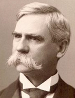

|

|

|
|
|
Henry Clay Warmoth was born in McLeansboro, Illinois, the son of the saddler
Isaac Sanders Warmoth and his wife, Eleanor Lane. After an education in the
local schools and the study of some law books belonging to his father, a Justice
of the Peace, in 1860 he removed to Lebanon, Missouri, was admitted to the bar,
and appointed county attorney. When war broke out, Warmoth raised troops for the
Union and became a lieutenant colonel in the Thirty-second Missouri. Wounded in
the Vicksburg campaign, he was dishonorably discharged by General Ulysses S.
Grant for allegedly spreading unfavorable reports about the army but was
reinstated after the personal intervention of President Abraham Lincoln. He
participated in the battles around Chattanooga and ended the war as a provost
judge in New Orleans.
Louisiana became Warmoth's permanent home. Active in the organization of the
Republican party in the state, he held that Louisiana was merely a territory and
was elected "territorial delegate" but was not seated. In 1866 he took part in
the Southern Loyalist Convention in Philadelphia and campaigned for the
Republican ticket in the North. In 1868, despite his youth, he was elected
Governor of Louisiana by the moderate Republicans.
Warmoth's administration was marked by widespread corruption, the worst
excesses of which he tried to prevent. Although his Lieutenant Governor, Oscar
J. Dunn, was African-American and Warmoth himself was an advocate of black
suffrage, he alienated many freedmen by his failure to press for school
integration and his veto of an equal accommodations bill. At the same time, the
conservatives despised him as a carpetbagger, and although he sought to
strengthen his position by the organization of the metropolitan police, in 1868
their use of intimidation and terror enabled the Democrats to carry the state
tor Horatio Seymour. By 1870, however, the legislature had passed several
measures giving the Governor control over the election machinery, so the
Republicans were able to win the elections that year.
Yet the Republican party was plagued by factionalism. Warmoth, who had
earlier collaborated with collector James F. Casey, the President's
brother-in-law, now failed to support him and earned the enmity of the Custom
House ring. Warmoth also had differences with his Lieutenant Governor, and when
Dunn died, the Governor saw to it that his then ally, Pinckney B. S. Pinchback,
was elected president of the Senate and his putative successor. In 1872,
however, he also broke with Pinchback, who refused to follow him into the
Liberal Republican party. In alliance with the Democrat John McEnery, he
attempted to bring about McEnery's success while hoping that the Democrats would
elect him to the Senate. After meeting Pinchback in New York, Warmoth engaged in
a railroad race with the Lieutenant Governor who had sought to hurry back to New
Orleans to sign a series of bills favorable to the Republicans and overtook him.
The result was that Horace Greeley carried Louisiana, but the state results were
in dispute. McEnery and his legislature's claim to victory were challenged by
the Republican William Pitt Kellogg, who assembled his own legislature, and two
state governments attempted to function until federal Judge E. H. Durell issued
an order favoring the Republicans. Warmoth was then accused of having solicited
a bribe from Pinchback; he was impeached, removed from office, and superseded by
the Lieutenant Governor, although the charges against him were never proven.
Now distrusted by Republicans and Democrats alike, Warmoth retired to buy a
plantation on the Mississippi, where he raised sugar and established a sugar
refinery. In addition, he was active as a railroad promoter. But he did not
eschew politics. Continuing actively to oppose the disfranchisement of blacks,
he was challenged to a duel by a journalist. Before Warmoth could meet his
opponent, however, the journalist was waylaid in the street in an affray that
ended in his death. Elected in 1876 as a Republican to the state legislature,
two years later he was a member of the state constitutional convention and in
1888 ran unsuccessfully for Governor. From 1890 to 1893 Warmoth served as
collector of the Port of New Orleans; in 1896, 1900, and 1908 he was a delegate
to the Republican National Convention and finally took up residence in New
Orleans. When he was over eighty years of age, he wrote his memoirs, War,
Politics, and Reconstruction, an effort at self justification. He died in New
Orleans in 1931.
Source: Hans Trefousse, Historical Dictionary of Reconstruction
(Westport, CT: Greenwood Press, 1991), 248-49.
|